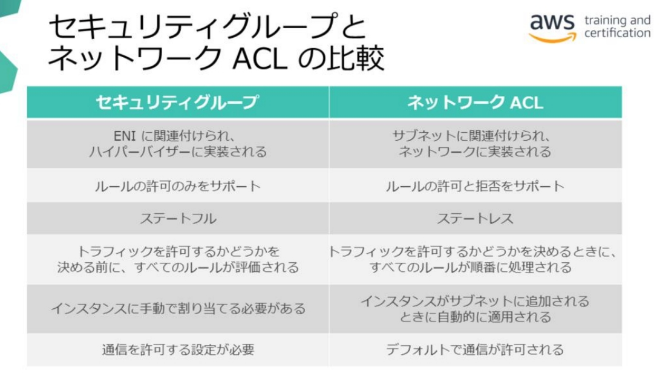
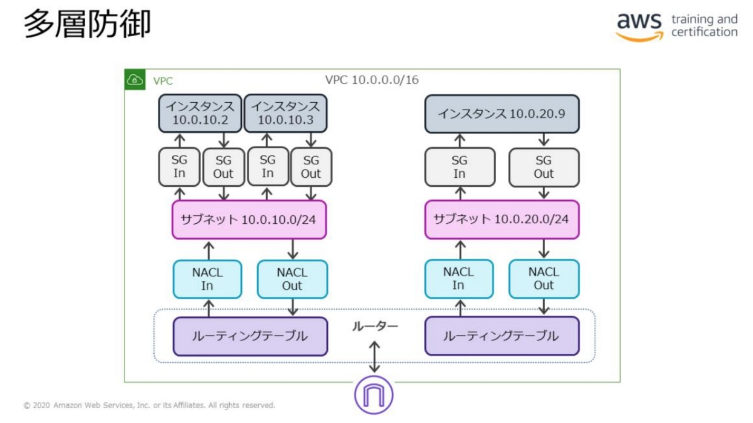
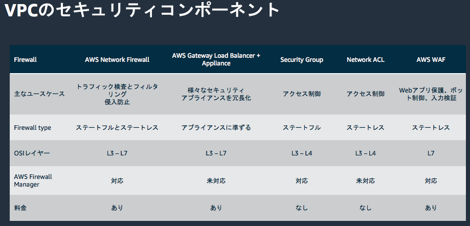
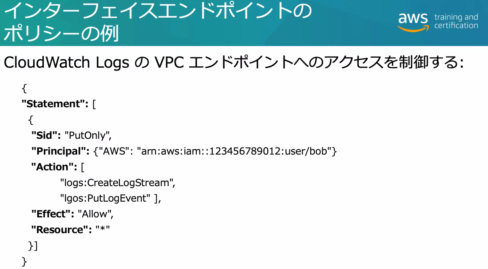
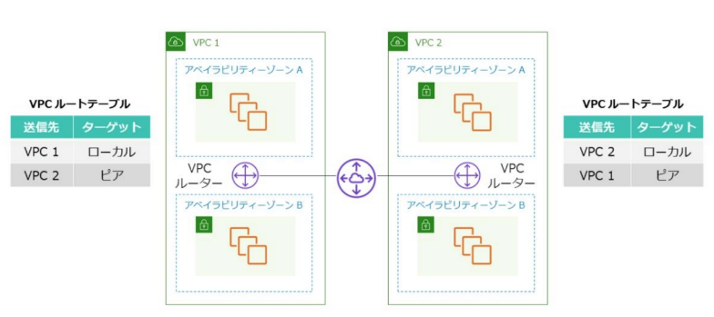
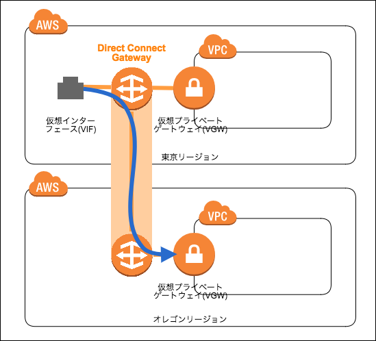
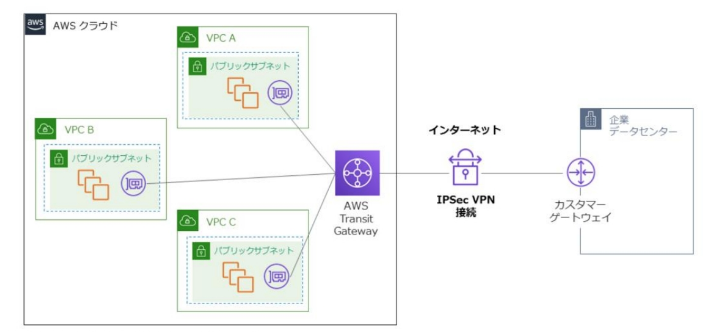

EC2 のセキュリティ
キーペア
- キーペアは作成したものをインポートすることも可能。
- キーペアを使用するよりインスタンスをディレクトリドメイン (AD, LDAP) に参加させ SSO することを推奨。ログインのトラッキングのため。
- 漏洩したキーを使用しているインスタンスは次のコマンドで探せる。
- aws ec2 describe-instances --filters "Name=key-name,Values=KEY_NAME"
インスタンスメタデータサービス (IMDS)
- アタッチしたロールの一時クリデンシャルはメタデータに格納される。
- リンクローカルアドレス 169.254.169.254 でアクセスされる。
OP25B
- AWS はデフォルトで EC2 インスタンスや Lambda 関数についてポート25の送信トラフィックをブロックしている。
- 別のポート番号か SES (Simple Email Service) の VPC エンドポイントを使用する。
- SES SMTP エンドポイントはサブミッションポート 587 と2587 をサポートしている
- AWS に制限解除をリクエストすることもできる。
- https://aws.amazon.com/jp/premiumsupport/knowledge-center/ec2-port-25-throttle/
メモリ・EBS のクリーンナップ
- ホストにメモリが割り当てられなくなると、ハイパーバイザによって直ちにスクラブクリーン(ゼロ設定)され、空きメモリプールに戻される。
- EBS ボリュームは削除直後にはスクラブクリーンされない。再利用の直前にスクラブクリーンされる。
- メモリもEBSボリュームもクリーンな状態でインスタンスに提供される。
Amazon Inspector
- 起動中インスタンスの脆弱性チェックを実行してレポート生成。
- エージェントをインストールする。
Ref. AWS: Security: Governance, Incident Response
AWS Systems Manager (ASM)
- インスタンス運用の半自動化。パッチ適用などの自動化が可能。
- Systems Manager エージェントをインストールする。
Ref. AWS: Security: Governance, Incident Response

ELB
インスタンスへのアクセスの前線防御 (さらに最前線に CloudFront でも防御できる)
- ALB は HTTP プロキシ、NLB は NAT ロードバランサ。
-
ヘルスチェック
- TCP/HTTP/HTTPS でキープアライブ。Healthy なターゲットにリクエストを転送。
- Unhealthy 遷移時に CloudWatch Events で通知可能。
-
TLS オフロード (TLS Termination)
- ELB が TLS を終端しターゲット側は TLS 対応せずに済む
- 証明書や SSL ライブラリ脆弱性などの管理を軽減。
-
E2E 通信暗号化のため NLB/CLB で TCP pass through するという逆のユースケースも。
- ALB は HTTP プロキシなので TCP pass through ではない。
-
ELB とターゲット間の HTTPS 通信
- オフロードにより ELB で終端してターゲットグループ設定で HTTPS を使用。
-
スティッキーセッション (Sticky session)
- 同一ターゲットにセッションを転送する機能。デフォルト無効。
- ロードバランサーが設定した Cookie により維持する。
- 設定された有効期限の間、同一ターゲットとセッションを維持する。
-
静的 IP アドレスのサポート (NLB)
- NLB はサブネット毎に1つ EIP を割り当てて固定 IP を設定できる。
- FW などの制約で宛先を IP 指定しなければいけない場合などに利用。
-
ユーザ認証
-
ALB の Cognito ユーザープール統合 。
- ALB がユーザープールの Hosted UI にリダイレクトする。
-
OpenID Connect (OIDC) 準拠 IdP 連携による認証。(Cognito 使わない ALB の機能)
- ALB で認証することでインスタンス上の Web アプリを改修せず認証を追加できる。
-
-
NLB はピアリングされた VPC の IP ベースのターゲットにも転送可能
ALB
- スケーリングとともに不正リクエストに対処するため DDoS 緩和にもなる。
-
HTTP Desync 緩和モードがデフォルトで機能している。
- フロントエンドの ALB とバックエンドのターゲットでの HTTP の解釈の違いを利用して悪意のあるリクエストを送り込む攻撃。
- RFC 7230 に準拠していないリクエストをブロックできる。
- https://dev.classmethod.jp/articles/alb-and-clb-adding-support-desync-mitigation-mode/
-
無効なヘッダフィールドが削除できる。
- レガシーアプリケーションを動かすインスタンスの前に ALB+WAF を置いて、アプリを改修せずに保護するというユースケースがある。
PFS (Perfect Forward Secrecy)
- 一時的なセッションキーを利用することで、キャプチャされた通信データと秘密鍵が両方漏洩しても復号できないという鍵交換に関する概念。
- PFS は全サービスで利用可能だが、ELB とCloudFront についてはユーザ側で HTTPS に設定できる。
- 証明書の秘密鍵が流出しても過去の TLS トラフィックが安全に保たれるようするため、ELB の HTTPS リスナーで Forward Secrecy ポリシーを設定できる。
ELB にも適切にセキュリティグループを設定する！
ELB とサブネット
- ELB はサブネットに配置される。
- ELB の設定で AZ 毎に配置先のサブネットを 1 つ指定する。
HTTPS の使用
HTTPS (443) リスナーを追加して証明書を設定する。

HTTP to HTTPS リダイレクション:
- HTTP (80) リスナーでターゲットグループへのフォワードアクションを削除し、代わりに 443 へのリダイレクトアクションを追加する。
VPC: Virtual Private Cloud
- マルチ AZ の VPC で可用性確保。
-
パブリックとプライベートのサブネットに分離。
- プライベートサブネットはさらに三層で分離。
- 保護されたサブネットは Outbound のインターネットアクセスも許さない。
-
パブリックサブネットは ELB と NAT ゲートウェイを配置
- Inbound アクセスは ELB で受付・負荷分散。ACM で ELB の証明書管理。
- Outbound アクセスは NAT ゲートウェイ経由
-
Web サーバと AP サーバ間はプライベート IP の内部 ELB で負荷分散。
-
RDS もマルチ AZ 構成のプライマリ/スタンバイ・リードレプリカを構成。
- リードレプリカがスタンバイインスタンスも兼ねる
- Ref. AWS SAA: RDS, Aurora, DynamoDB, ElastiCache
-
S3 はファイルの置き場所
- Glacier でバックアップ
-
DyamoDB でセッション管理
- 最近は SPA で AP サーバが省略される場合も
こちらの図では各層でのセキュリティグループの分割についても表示
マルチ AZ とサブネット
- リージョン内の複数の AZ にサブネットを作成できる。
- AZ 内に複数サブネットを置けるが、1つのサブネットは複数 AZ (=データセンター)にまたがることはできない。
ルートテーブル
-
サブネット毎にアタッチする仮想ルーティングテーブル。
- デフォルトではデフォルトルート (IGW) とローカルルートだけの同じルートテーブルが複数サブネットに割り当てられていた
-
各種ゲートウェイ (IGW, NAT GW, VGW) へのルートを登録する。
ゲートウェイ
-
IGW (Internet Gateway)
- プライベート/パブリックIP 1対1の Static NAT でインターネットに出て行くゲートウェイ
- 送信先を 0.0.0.0/0 としたデフォルトルートとして設定される
-
NAT Gateway
- プライベートサブネットからインターネットへ NAPT でアクセスさせたい時に使う。
- パブリックサブネットに配置する。サブネットのルートテーブルでインスタンスからのトラフィックを誘導するので、そもそもサブネットは分かれている必要がある。
-
VGW (Virtual Private Gateway)
- VPC からインターネット VPN または専用線 (Direct Connect) で外部拠点と接続するGW。
- 対向側は CGW (Customer Gateway) と呼ばれる。
- IGW 同様サブネットの外にある。
NAT インスタンス
-
Amazon Linux に NAT を構成した AMI (amzn-ami-vpc-nat) で立てるインスタンス。
- NAT GW と異なりユーザが管理する。
-
EIP またはパブリック IP アドレスを使用する。(NAT GW は EIP)
-
セキュリティグループを関連づけトラフィックをコントロールできる。
- NAT GW は SG 関連づけ出来ない。インスタンスの SG か NACL で制御。
-
ポート転送や踏み台サーバとしての使用ができる。(NAT GW はできない)
- 送信元/送信先チェック (Source/Destination Checks) の無効化が必要。
- https://docs.aws.amazon.com/ja_jp/vpc/latest/userguide/vpc-nat-comparison.html
セキュリティグループ
- ENI にアタッチされるホワイトリストベースの仮想 FW ルール。(評価順序はない)
- ステートフルなので送受信で個別に指定する必要はない。
- プロトコル、ポート、インバウンド/アウトバウンド (Ingress/Egress)
- デフォルトはアウトバウンド全許可のルールのみ (インバウンドは空=全拒否)
- Peer は IP だけでなく別のセキュリティグループも指定できる。
Network ACL (NACL)
- サブネットにつく仮想 FW ルール。サブネット単位で制御するような場合に使う。
- ブラックリストベースでデフォルト Allow で素通しになっている。(評価順序がある)
- ステートレスなのでインバウンド・アウトバウンドのパケットで個別設定する。
- クライアントへのレスポンスには一時ポート(Ephemeral ports) の 1024-65535 とかのポートレンジでルールが必要となる。
ちなみにインスタンス同士がパブリック IP で通信するには同じサブネットにいても一度 IGW の Static NAT でインターネットに出るので、セキュリティグループで互いのパブリック IP からのインバウンド通信を許可する必要がある。

- 特定 IP 範囲のブロックをインスタンスに負荷をかけず行うには ACL/WAF を使う。
- セキュリティグループではハイパーバイザーに負荷がかかる。
- そもそもセキュリティグループは許可ルールしか書けない。

VPC Reachability Analyzer
- VPC 内または VPC 間のリソースの到達性を確認できる。(セキュリティ機能ではない)
- https://aws.amazon.com/jp/blogs/news/new-vpc-insights-analyzes-reachability-and-visibility-in-vpcs/
(参考) Backnet パターン
- Web アクセスを受けるパブリックサブネットと管理用 (SSH) のプライベートサブネットに分け、インスタンスからそれぞれに ENI を生やす。
- 管理用のプライベートサブネットは VPN 経由でのみ接続できるようにする。
- 各 ENI に異なるセキュリティグループを設定する。
VPC の DNS (Route 53 Resolver)
- 外部のパブリック IP および VPC のプライベート IP の名前解決。
- デフォルトで有効。
- enableDnsSupport: DNS 名前解決の有効化。
- enableDnsHostnames: インスタンスのパブリック IP へのパブリックホスト名の割り当て。
- https://docs.aws.amazon.com/ja_jp/vpc/latest/userguide/vpc-dns.htm
独自 DNS サーバの使用
-
VPC の DHCP オプションセットで次のような設定が可能。
- domain-name-servers: 最大 4 つの DNS サーバの IP アドレス
- domain-name: インスタンスのカスタムドメイン名。
- ntp-servers: 最大 4 つまでの NTP サーバの IP アドレス
- netbios-name-servers: 最大 4 つまでの NetBIOS ネームサーバの IP アドレス。
-
DHCP オプションセットを 新たに作成して VPC に関連づけて使用する。
- https://docs.aws.amazon.com/ja_jp/vpc/latest/userguide/VPC_DHCP_Options.html
VPC フローログ
- VPC, サブネット, ENI 単位で設定にしてトラフィック情報を取得できる。
- パケットは見られない。IP/TCP/UDP ヘッダレベルのフロー情報。
- CloudWatch Logs, S3 に送信する。
- ミラーポートによる取得なのでスループットには影響しない。
ENI の送信元/送信先チェック (source & destination check)
- ENI の IP アドレスか送信元/送信先なのかチェックしてどちらでもないパケットを破棄するENI の設定。
- 自分宛でない通信を受け付ける NAT, ルーティング, ファイアウォールなどを実行するインスタンスでは無効にする必要がある。(透過プロキシも)
VPC トラフィックミラーリング
- ENI のトラフィックを EC2 インスタンスにミラーリングするサービス。
- パケットのペイロードを含めて取得できる。
VXLAN (Virtual eXtensible Local Area Network) がベース
- L3ネットワーク上に論理的なL2ネットワークを構築するトンネリングプロトコル。
- パケットは VXLAN ヘッダでカプセル化されて UDP 4789 ポートに転送されてくる。
- ターゲットは ENI か UDP リスナーを設定した NLB を指定できる。
- ターゲットは別 AZ でも、VPC ピア接続またはトランジットゲー トウェイで接続された異なる VPC でも構わない。クロスアカウントも可能。
- 2番目のケースはルール指定で TCP と UDP でターゲットを分けている。
- 3番目はケースはルール指定で VPC 外部と通信するトラフィックのみをミラーリング。
フォレンジック
Step-1. 隔離対象のインスタンスに目印のタグを付ける
aws ec2 describe-instances --filters "Name=ip-address,Values=52.91.119.105”
aws ec2 create-tags --resources i-a123 --tags Key=Environment,Value=Quarantine:REFERENCE-ID
Step-2. Auto Scaling グループと ALB からインスタンスを切り離す
aws autoscaling detach-instances --instance-ids i-a123 --auto-scaling-group-name web-asg
aws elb deregister-instances-from-load-balancer --instances i-a123 --load-balancer-name myELB1
Stap-4. 隔離用のセキュリティグループに移動し、誤ってインスタンスが終了 (Terminate) されないよう設定する
aws ec2 modify-instance-attribute --instance-id i-a123 --groups sg-isolated
aws ec2 modify-instance-attribute --instance-id i-a123 --attribute disableApiTermination --value true
Step-4. フォレンジック調査用に EBS ボリュームをスナップショットにコピーする
aws ec2 create-snapshot --volume vol-12xxxx78 --description ”ResponderName-Date-REFERENCE-ID”
- スナップショットをとる際は本来インスタンスを Stop したほうがいいが、メモリダンプが取れなくなる。
Step-5. フォレンジックツールを含んだフォレンジックインスタンスを作成する
- 同じ AMI からインスタンスを作成してフォレンジックツールをインストールする。
- フォレンジッグ用のセキュリティグループをアタッチする。
Step-6. スナップショットから新しい EBS ボリュームを作成しフォレンジックインスタンスにアタッチする
aws ec2 create-volume --region us-east-1 --availability-zone us-east-1a --snapshot-id snap-a123 --volume-type io1 --iops 10000
aws ec2 attach-volume --volume-id vol-123a --instance-id i-new4n6x --device /dev/sdf
Step-8. メモリダンプの取得等で元のインスタンスにアクセスする必要があれば隔離用 SG とフォレンジック SG 間の通信を通す
aws ec2 authorize-security-group-ingress --group-id sg-isolated --protocol tcp --port 0-65535 --source-group sg-forensic
タグ付けした隔離対象インスタンスにこれらの処理を自動化することも考慮する。
Systems Manager が使える。
EC2Rescure
- ログ収集やメモリダンプなどのトラブルシューティングができる。Linux/Windows 用がある。
-
AWSSupport-ExecuteEC2Rescue
- EC2Rescure を実行する SSM Automation ドキュメント。
-
https://docs.aws.amazon.com/ja_jp/AWSEC2/latest/WindowsGuide/Windows-Server-EC2Rescue.html
- https://dev.classmethod.jp/articles/amazon-ec2-windows-ec2rescue/
VPC エンドポイント
VPC からインターネットを経由せずパブリック IP 空間の AWS サービスにアクセスする。
ゲートウェイエンドポイント
- サービスのゲートウェイをルートテーブルに指定する。S3 と DynamoDB のみ。
インターフェイスエンドポイント (PrivateLink)
-
ENI としてサブネット内のプライベート IP アドレスを持つエンドポイントが現れる。
- サービスのエンドポイントと ENI が PrivateLink でリンクされる。
-
VPC の DNS にサービスのデフォルトのホスト名が登録される
- <サービス名>.<リージョン>.amazonaws.com の A レコード
-
ENI に関連付けたセキュリティグループでアクセス制御が可能
- インバウンドの制限

エンドポイントポリシー
- VPC エンドポイントにアタッチされるポリシー。VPC から接続先 AWS サービスへのアクセス権を設定。
- ゲートウェイエンドポイント・インターフェイスエンドポイント両方にある。

- ゲートウェイエンドポイントポリシーではプリンシパルを制限できない。
リソースベースポリシーも特定 VPC エンドポイントからのアクセスを制御できる。
VPC PrivateLink によるサービスのプライベート公開
- NLB を別 VPC のインターフェースエンドポイントとすることで NLB 背後のサービスをその VPC にプライベート公開できる。
- https://dev.classmethod.jp/articles/aws-reinvent-vpc-privatelink-endpoint/
VPC ピア接続 (VPC ピアリング)
概要
- 2つの VPC ルーター同士を接続する。
-
VPC ルートテーブルにお互いのプライベートアドレスへのルーティングを設定。
- サブネットの CIDR ブロックがかぶらないように設計する必要がある。
-
クロスリージョン・クロスアカウントの VPC も接続可能。

推移的なピア接続は不可
- A から C には到達できないので、フルメッシュ型で VPC ピア接続を設定する必要がある。
- VPC が多くなる場合はトランジットゲートウェイを使う。
- Direct Connect や VPN でオンプレから VPC に接続する場合も同様に推移的なルーティングはできない。
- VGW (Virtual Private Gateway) と CGW (Customer Gateway) 間を VPN または Direct Connect の専用線で接続。
- Transit Gateway で VPC 間およびオンプレ (CGW) をスター型接続。


AWS Managed VPN
- VGW と CGW によるサイト間 VPN 接続。
- トンネ ルあたり最大 1.25 Gbps のスループット。
- CloudWatch メトリクスなども取れる。
ソフトウェア VPN (アンマネージド) -
OpenVPN 等を EC2 インスタンス上に立てる。パブリックサブネットに配置。
-
OSPF 等のルーティングプロトコルとか VGW がサポートしない機能を使いたい場合。
- VGW のキャパシティ制限 (トンネル数 10本, スループット 1.25ギガ 等) がミートしない場合。
AWS Client VPN
- クライアント VPN 接続。リモートアクセス VPN。
- OpenVPN や AWS 製のクライアントを使う。
- リージョンに Client VPN エンドポイントを作成してサブネットに関連づける。
- サブネットに Client VPN ネットワークインターフェースができる。
- 認証は AD 認証 (SAML)とあらかじめ証明書を配布しておくクライアント認証がある。
- AWS IAM Identity Center 統合で SAM+
- 図ではパブリックサブネットとあるがプライベートサブネットも可能。
 br>
br>
Direct Connect
- リージョンに接続された Direct Connect ロケーションに自社ルータをハウジング
-
専用接続 (Dedicated Connections)
- Direct Connect ロケーションの AWS ルータと VPC 間の接続を専有するプラン。
- 1Gbps/10Gbps の2種類。
-
ホスト型接続 (Hosted Connections)
- 他のユーザと接続を共有する。
- 50Mbps~10Gbps
-
図で VGW/CGW が登場しているのは VPN over Direct Connect のユースケース？
論理接続

- VPC (=VGW) とのトラッフィックは VLAN で論理接続される。
- カスタマールータでは各 VPC の VLAN 毎に VIF (Virtual Interface) をアタッチする。
オンプレから VPC へのルーティング情報
- BGP で VPC へのルーティング情報が経路広報される。
VPC からオンプレへのルーティング情報
パブリック接続
-
AWS のパブリック空間に接続するパブリック VIF で AWS サービスに接続する。
- カスタマールータでパブリック IP と NAT が必要。
-
AWS のグローバルサービスへのルートを BGP でカスタマーゲートウェイに経路広報する。
- アウトバウンド通信はギガバイト単価で Direct Connect のほうが安く設定されているので Direct Connect 経由のほうがコスト面で有利な場合も。
VPN over Direct Connect (専用線)
- 要件でトラフィック暗号化とネットワークの低レイテンシ・安定性が必要な場合に用いる。
- Direct Connect はパブリック接続で AWS のネットワークと接続。
- その上で VGW と CGW で VPC に VPN 接続する。
- Direct Connect は専用線だから安全では？
- 通信事業者・AWS の VPC までのネットワーク環境内でも保護を保証したい場合
Direct Connect Gateway - Direct Connect ロケーションからは同じリージョンの VIF にしか接続できない。 - 別リージョンの VPC に接続するためのゲートウェイとして Direct Connect Gateway を用いる。 - Direct Connect Gateway 経由で VPC 同士は通信できない。 - Direct Connect Gateway 経由でユーザ拠点同士は通信できない。 -  - Direct Connect Gateway のリージョン間通信は AWS のプライベートネットワークを経由するので、高速でセキュアな通信環境が期待できる。 - https://dev.classmethod.jp/articles/direct-connect-gateway/
Transit Gateway
- VPC 同士やオンプレからの Direct Connect や VPN 接続を中継する HUB となるゲートウェイ。
- スター型ネットワークでルートテーブルを Transit Gateway で集中管理。
- リージョンの中に大きなルータがあるイメージ。

VPC 側のルートテーブルを VPN 側のルートテーブルの設定で VPN とは通信できるが VPN 間の通信を禁止している例？
Q. S3 上に静的ホストされた Web サイトを DirectConect 接続された社内のみに公開する場合、どのような制限すればよい？
A. バケットポリシーで特定の IP 領域からのアクセスだけ許可。さらに S3 オリジンの CloudFront で手前に認証の追加などもできる。
AWS Network Firewall
Ref. AWS: Security: WAF, Shield, CloudFront, Route 53
AWS Gateway Load Balancer
サードパーティーのセキュリティアプライアンスの負荷分散。
ゲートウェイLoad Balancer エンドポイント
- 保護対象の VPC には VPC インターフェースエンドポイント (PrivateLink) で接続される。
- ルートテーブル設定でエンドポイントにトラフィックを通過させる。(AWS Network Firewall も同様)
- VPC 同士は直接接続されないので CIDRが重複してもOK。
https://dev.classmethod.jp/articles/introducing-aws-gateway-load-balancer/